Fiches 6e année
1113 fiches d'exercices 6e année en français : lecture, texte à trous et compréhension orale, à imprimer (PDF) avec corrigé.
1.113 ressources
Thème
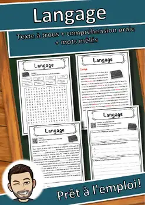
Langage – Compréhension de lecture : texte à trous, écoute et mots mêlés
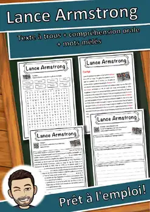
Lance Armstrong – Compréhension de lecture : texte à trous, écoute et mots mêlés
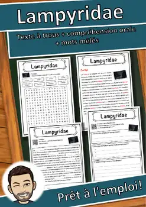
Lampyridae – Compréhension de lecture : texte à trous, écoute et mots mêlés
Lampe à incandescence – Texte à trous, compréhension orale et mots mêlés
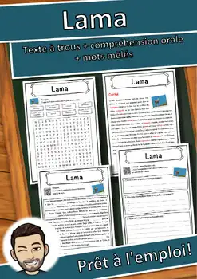
Lama – Compréhension de lecture : texte à trous, écoute et mots mêlés
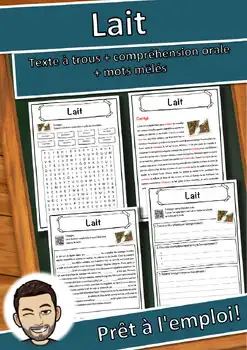
Lait – Compréhension de lecture : texte à trous, écoute et mots mêlés
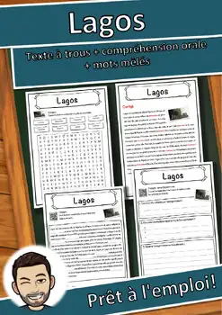
Lagos – Compréhension de lecture : texte à trous, écoute et mots mêlés
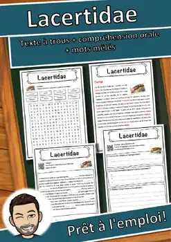
Lacertidae – Compréhension de lecture : texte à trous, écoute et mots mêlés
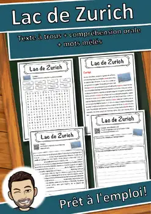
Lac de Zurich – Compréhension de lecture : texte à trous, écoute et mots mêlés
Lac de Neusiedl – Compréhension de lecture : texte à trous, écoute et mots mêlés
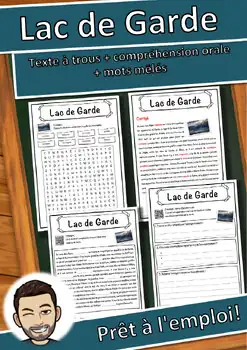
Lac de Garde – Compréhension de lecture : texte à trous, écoute et mots mêlés
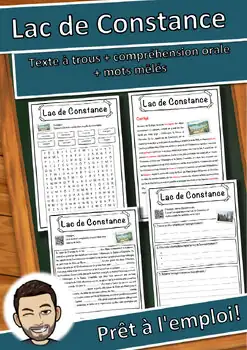
Lac de Constance – Texte à trous, compréhension orale et mots mêlés
Lac Müritz – Compréhension de lecture : texte à trous, écoute et mots mêlés
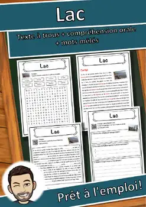
Lac – Compréhension de lecture : texte à trous, écoute et mots mêlés
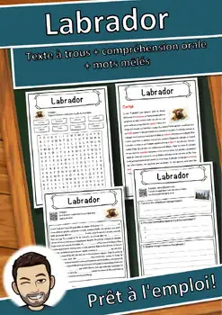
Labrador – Compréhension de lecture : texte à trous, écoute et mots mêlés
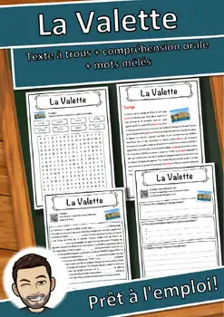
La Valette – Compréhension de lecture : texte à trous, écoute et mots mêlés
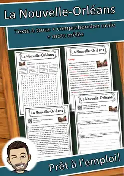
La Nouvelle-Orléans – Texte à trous, compréhension orale et mots mêlés
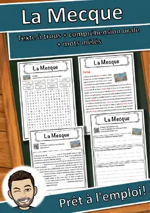
La Mecque – Compréhension de lecture : texte à trous, écoute et mots mêlés
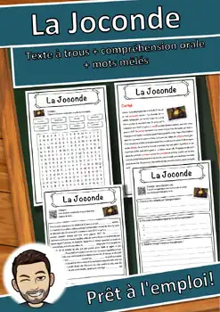
La Joconde – Compréhension de lecture : texte à trous, écoute et mots mêlés
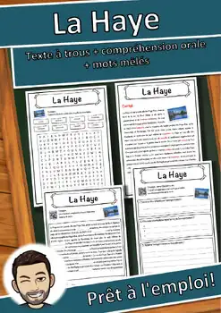
La Haye – Compréhension de lecture : texte à trous, écoute et mots mêlés
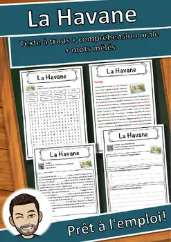
La Havane – Compréhension de lecture : texte à trous, écoute et mots mêlés
La Belle au bois dormant – Texte à trous, compréhension orale et mots mêlés
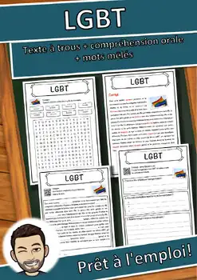
LGBT – Compréhension de lecture : texte à trous, écoute et mots mêlés
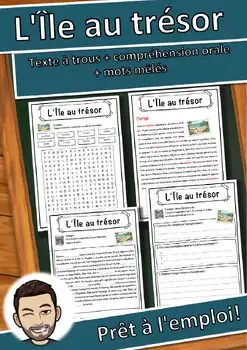
L'Île au trésor – Compréhension de lecture : texte à trous, écoute et mots mêlés
Kurde – Compréhension de lecture : texte à trous, écoute et mots mêlés
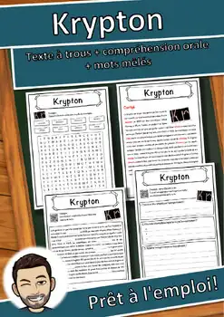
Krypton – Compréhension de lecture : texte à trous, écoute et mots mêlés
Kremlin de Moscou – Texte à trous, compréhension orale et mots mêlés
Košice – Compréhension de lecture : texte à trous, écoute et mots mêlés
Koweït – Compréhension de lecture : texte à trous, écoute et mots mêlés
Koala – Compréhension de lecture : texte à trous, écoute et mots mêlés

Kleidung – Compréhension de lecture : texte à trous, écoute et mots mêlés
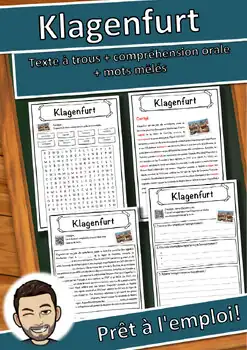
Klagenfurt – Compréhension de lecture : texte à trous, écoute et mots mêlés
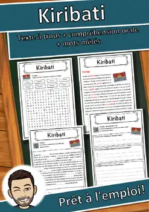
Kiribati – Compréhension de lecture : texte à trous, écoute et mots mêlés
Kirghizistan – Compréhension de lecture : texte à trous, écoute et mots mêlés
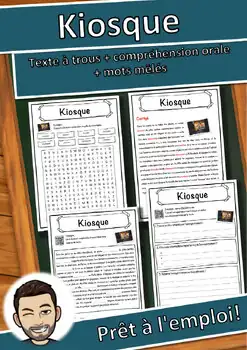
Kiosque – Compréhension de lecture : texte à trous, écoute et mots mêlés
Kinshasa – Compréhension de lecture : texte à trous, écoute et mots mêlés
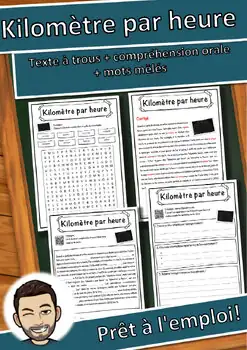
Kilomètre par heure – Texte à trous, compréhension orale et mots mêlés
Kilimandjaro – Compréhension de lecture : texte à trous, écoute et mots mêlés
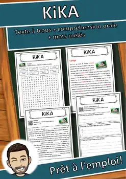
KiKA – Compréhension de lecture : texte à trous, écoute et mots mêlés
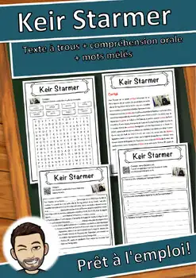
Keir Starmer – Compréhension de lecture : texte à trous, écoute et mots mêlés
Kazakhstan – Compréhension de lecture : texte à trous, écoute et mots mêlés
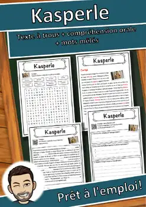
Kasperle – Compréhension de lecture : texte à trous, écoute et mots mêlés
Karl Nehammer – Compréhension de lecture : texte à trous, écoute et mots mêlés
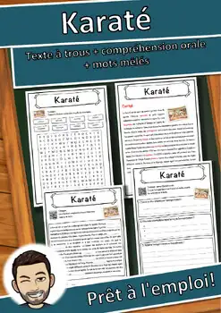
Karaté – Compréhension de lecture : texte à trous, écoute et mots mêlés

Kaliningrad – Compréhension de lecture : texte à trous, écoute et mots mêlés
Kaiserschmarrn – Compréhension de lecture : texte à trous, écoute et mots mêlés
Jésus de Nazareth – Texte à trous, compréhension orale et mots mêlés
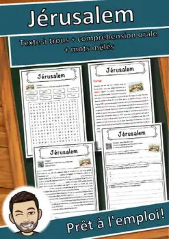
Jérusalem – Compréhension de lecture : texte à trous, écoute et mots mêlés
Aucune ressource trouvée – essaie un autre mot ou un autre filtre.